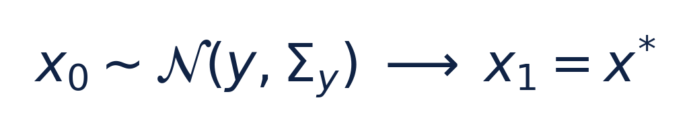
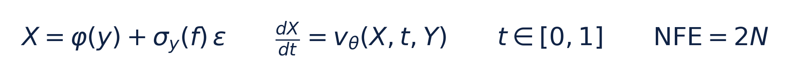
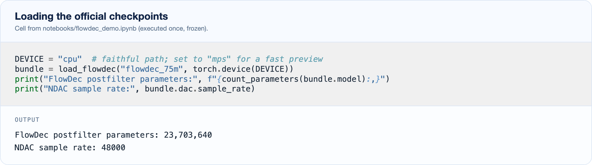
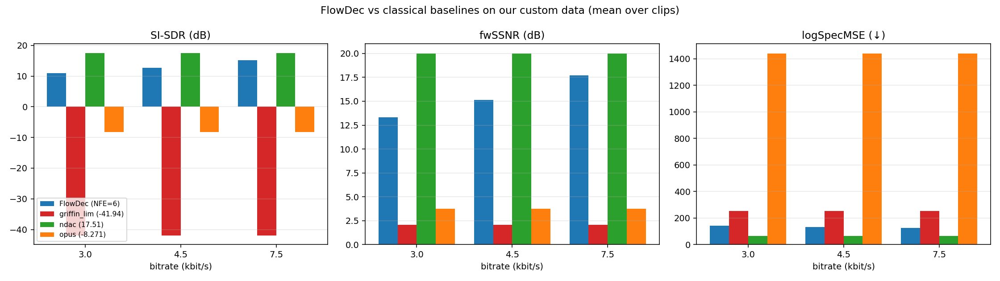
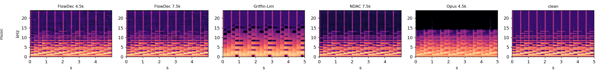

FlowDec: a flow-based full-band general audio codec
Paper review and independent testing on our own 48 kHz audio — a non-adversarial codec with a
conditional-flow-matching postfilter that samples in 6 network evaluations.
15 sections10 min + 5 min Q&A3 required criteria covered7 audio clips (A/B vs Opus)Press ← / → in lecture mode
AMLT ITMO 2026 · course project
FlowDec: a flow-based full-band general audio codec
Paper review and independent testing on our own 48 kHz data · 10 min + 5 min Q&A
01
Paper: *FlowDec: A flow-based full-band general audio codec with high perceptual quality* — Welker, Le, Chen, Hsu, Gerkmann, Richard, Wu, ICLR 2025 (Poster).
Every number in this deck is produced by our own pipeline from the official checkpoints, and is reproducible with uv run python scripts/run_experiments.py.
Speaker notes
Introduce the paper, the task (review + independent testing), and the timing budget.
00 / Abstract
Verdict first
What the paper claims, and what our own measurements say
02
A 48 kHz full-band neural codec for speech + music + ambient at 4.5–7.5 kbit/s.
No GAN. A non-adversarial codec (NDAC) plus a conditional-flow-matching (CFM) postfilter.
6 network evaluations (NFE) instead of ~60 for score-based ScoreDec — ~10× cheaper sampling.
On our own data at 4.5 kbit/s: SI-SDR 12.75 dB vs Opus -5.42 dB; FAD×100 26.0 vs 99.2.
Against the codec-only baseline NDAC-75 the picture reverses: NDAC wins on SI-SDR (17.51 vs 15.13 dB) but loses on FAD×100 (29.4 vs 19.1).
Positioning (authors): not a replacement for FLAC/Opus for storage — a component for very-low-bitrate coding and for tokenizing audio for generative audio-language models.
Speaker notes
Answer the whole question up front, then walk through evidence. Leave the SI-SDR/FAD reversal for later.
01 / Introduction
The problem: natural-sounding audio at very low bitrates
Why almost every neural codec reaches for a GAN — and why that is a problem
03
An audio codec compresses a waveform into a compact, quantized representation and reconstructs the waveform from it.
Legacy codecs (Opus, AAC, EVS) use hand-crafted transform/prediction designs; modern end-to-end neural codecs (SoundStream, EnCodec, DAC) learn the whole pipeline.
To sound natural at very low bitrate, almost all neural codecs use adversarial (GAN) training: a discriminator pushes the decoder towards natural audio — but GAN training is unstable, needs several hand-tuned discriminators and loss weights, and can mode-collapse.
ScoreDec avoided the GAN with a *score-based diffusion* postfilter — but it worked for speech only, only at 24 kbit/s, and needed ~60 NFE (RTF ≈ 1.7) → impractical.
FlowDec keeps the postfilter idea, rebuilds it on conditional flow matching, and generalises it to full-band speech, music and ambient at 4.5–7.5 kbit/s.
Speaker notes
The gap is: no adversarial training, but also no expensive sampling. FlowDec closes both.
02 / Introduction
Required criterion: Novelty
What is new here
Four concrete contributions (novelty — required criterion)
04
New joint CFM coupling for signal enhancement. The noising distribution is centred on the codec output: x0 ~ N(y, Σ_y) interpolates to x1 = x*. The flow is therefore contractive (trajectories actually reach the target), numerically stable, and accurate at very few steps. One hyperparameter (σ_y) instead of ScoreDec's four.
Frequency-dependent σ_y(f). Audio power drops with frequency, so a single scalar over-smooths the highs; a per-band σ_y estimated from the data (quantile heuristic) visibly improves low-NFE quality.
Non-adversarial codec training (NDAC). DAC with *all* discriminators removed, plus two losses a non-adversarial codec needs: a multi-scale constant-Q (CQT) loss for low frequencies and an L1 waveform loss for phase / SI-SDR. Distribution matching is handed to the CFM postfilter.
General full-band audio. 48 kHz (≤20 kHz), speech + music + ambient, at 4.5–7.5 kbit/s — versus ScoreDec's speech-only 24 kbit/s.
Novelty (required criterion). The technical core is the *joint* CFM coupling x0 ~ N(y, Σ_y) with σ1 = 0, which is what makes a generative postfilter stable at NFE = 6 where ScoreDec needs ~60.
Speaker notes
Spell out the four contributions; the committee explicitly asks for novelty.
03 / Model
Model overview: two-stage postfilter codec
A non-adversarial codec produces a coarse estimate; a CFM postfilter regenerates the detail
05
Underlying codec — NDAC-75. 75 Hz feature rate, 48 kHz, hop 640, 10 codebooks × 1024 dims. The bitrate is chosen at inference by how many codebooks are used: nq = 10 / 8 / 6 / 4 → 7.5 / 6.0 / 4.5 / 3.0 kbit/s.
The postfilter is a modified NCSN++ 2-D U-Net (23.7 M trainable parameters by our own count; the paper quotes ~26 M): first two depths widened to 256 channels (suppresses high-frequency artefacts on music), depth reduced to 4, and all attention removed so runtime is linear in duration.
It works in a compressed complex STFT domain: 1534-sample Hann window (31.96 ms), hop 384 (75 % overlap), amplitude compression α = 0.3, phase preserved. This invertible transform φ is applied before the flow and inverted afterwards.

The joint coupling that makes the flow contractive and stable at few steps.Speaker notes
Walk the diagram left to right. Emphasise that the bitrate is a runtime choice, not a separate model.
04 / Model
The algorithm: joint flow matching + midpoint ODE
Train to regress a constant velocity; sample by integrating a short ODE
06
Training. Regress the *constant velocity* that carries a point from its noisy, codec-centred start to the clean target. Adam, lr 1e-4, 800 k iterations, 2 s snippets, batch 64, EMA 0.999.
Inference. Start from X = φ(y) + σ_y(f)·ε, integrate dX/dt = v_θ(X, t, Y) with the midpoint solver for N steps (NFE = 2N; default N = 3 → NFE = 6), then map back with φ⁻¹ and clip.
Pros. No GAN (stable, interpretable, no mode collapse) · 6 NFE vs ~60 for ScoreDec (RTF ≈ 0.23 vs 1.71 on an A100) · full-band general audio at 4.5–7.5 kbit/s · one hyperparameter · best FAD among compared codecs.
Cons. Worse intrusive metrics than adversarial DAC (the rate–distortion–perception trade-off) · still needs a strong codec *and* a generative DNN · non-causal → not streaming-capable · licence CC-BY-NC and a heavy dependency stack.

Speaker notes
Keep this slide short: two equations, one training sentence, one inference sentence, pros/cons.
05 / Experiments
Experimental setup on our own data
Official checkpoints, our own 48 kHz clips, and classical baselines
07
We deliberately did not reuse the paper's test set: a small, deterministic, 48 kHz mono set of 5 s clips (scripts/make_custom_data.py, fixed seed 1234).
Everything runs through the official checkpoints (flowdec_75m + ndac-75) and the official inference API — dac.encode(...) → model.enhance(..., N, solver) — with EMA weights and the default midpoint solver.
Metrics are identical for every method, as in the paper: SI-SDR, fwSSNR, logSpecMSE, and FAD×100 with CLAP-laion-audio embeddings (perception).
Classical baselines (required):Opus through ffmpeg (CBR, 60 ms frames) at 3.0 / 4.5 / 7.5 kbit/s, and Griffin-Lim from a rate-matched (~7.7 kbit/s) mel magnitude spectrogram — the textbook phase-recovery approach that discards phase.
Hardware: Apple M4 Pro, 24 GB. All reported numbers are CPU (the faithful path); MPS is discussed later as a fast-but-lossy preview.
category
clips
source
speech
2
macOS say text-to-speech (Samantha), converted to 48 kHz
music
2
synthesised polyphonic chords + percussion + bass line
ambient / sound
2
synthesised 1/f noise beds with swells and chirps
Six deterministic 5 s mono clips at 48 kHz, generated by scripts/make_custom_data.py.
Speaker notes
Stress that this is our own data and our own baseline implementations, not the paper's tables.
06 / Experiments
Required criterion: Reproduction
Reproduction on the authors' own audio
Sanity-check our pipeline before trusting our own numbers (reproduction — required criterion)
08
We downloaded the authors' published demo audio (clean reference plus their official FlowDec and DAC-75 outputs) and ran our pipeline on their clean references.
clip
method
SI-SDR (dB)
fwSSNR (dB)
logSpecMSE
Music_Licensed_1
authors FlowDec
7.70
15.75
448
Music_Licensed_1
ours FlowDec
7.60
15.96
565
Music_Licensed_1
authors DAC-75
10.44
16.26
119
Sound_AudioSet_1
authors FlowDec
0.92
15.57
91
Sound_AudioSet_1
ours FlowDec
0.65
15.20
101
Sound_AudioSet_1
authors DAC-75
4.99
16.01
128
Speech_EARS_1
authors FlowDec
8.60
15.20
103
Speech_EARS_1
ours FlowDec
8.87
15.38
99
Speech_EARS_1
authors DAC-75
11.16
16.57
89
Our pipeline on the authors' clean references vs their official outputs.
Our FlowDec output matches the authors' own within a fraction of a dB in SI-SDR / fwSSNR — faithful, as expected, since the postfilter is stochastic and exact sample equality is not expected. Their DAC-75 output keeps the better SI-SDR, which is the trade-off we return to in the next two slides.
Reproduction (required criterion): our pipeline reproduces the authors' published outputs from the official checkpoints, on their own audio.

The official inference API in practice: load the checkpoint pair, then run the pipeline.Speaker notes
This slide is the credibility anchor: everything after it is our own measurement, not a citation.
07 / Experiments
Results on our own 48 kHz data
FlowDec across bitrates, versus the codec-only baseline and the classical codecs
09
method
rate (kbit/s)
SI-SDR (dB)
fwSSNR (dB)
logSpecMSE
FAD×100
FlowDec
7.5
15.13
17.72
126
19.1
FlowDec
4.5
12.75
15.13
134
26.0
FlowDec
3.0
10.92
13.31
141
35.3
NDAC (codec only)
7.5
17.51
19.99
66
29.4
Opus
7.5
-2.08
6.48
1430
78.7
Opus
4.5
-5.42
3.63
1475
99.2
Opus
3.0
-17.32
1.12
1414
126.9
Griffin-Lim
~7.7
-41.94
2.07
253
99.7
Mean over our six custom 48 kHz clips (lower logSpecMSE and FAD are better).
The whole inference path is two calls on the official API — dac.encode(...) and model.enhance(..., N=3, solver="midpoint"); see the code-cell screenshots in notebooks/flowdec_demo.ipynb.

Mean metrics over our six clips (results/plots/custom_bars.png).Speaker notes
Walk the table row by row: FlowDec beats Opus/GL everywhere; NDAC-only wins on SI-SDR but loses on FAD.
08 / Experiments
Required criterion: Comparison with classical baselines
FlowDec vs classical baselines
Opus and Griffin-Lim at a matched low rate (comparison — required criterion)
10
method
rate (kbit/s)
SI-SDR (dB)
fwSSNR (dB)
logSpecMSE
FlowDec
7.5
14.56
20.04
97
FlowDec
4.5
11.84
16.93
105
Opus
7.5
2.33
7.79
2274
Opus
4.5
0.05
6.60
2297
Griffin-Lim
~7.7
-45.38
2.64
172
A single music clip, so the comparison is audible rather than averaged.
At 4.5–7.5 kbit/s Opus is severely degraded, and unusable at 3 kbit/s (-17.32 dB SI-SDR).
Griffin-Lim is dominated because it discards phase entirely (-41.94 dB SI-SDR, FAD×100 99.7).
FlowDec is ahead on every metric, and its FAD advantage is large — i.e. it *sounds* much closer to the reference than either classical baseline.
In the spectrograms FlowDec reconstructs high-frequency structure that Opus smooths away, while Griffin-Lim produces a buzzy, phase-incoherent texture.
Comparison with classical baselines (required criterion): rate-matched Opus and Griffin-Lim lose to FlowDec on perception *and* on signal metrics.
Raw Python behind this table (notebooks/flowdec_demo.ipynb, re-run against the official checkpoints): scripts/build_slide_assets.py screenshots the executed cells into report/assets/code/.

Spectrograms of one music clip: clean, FlowDec, Opus, Griffin-Lim.Speaker notes
Make the audible point here or on the next slide; the numbers alone are not the argument.
09 / Experiments
Listen: FlowDec vs Opus at 4.5 kbit/s
Same clip, same bitrate — play them in this order and compare by ear
11
Same clip, same bitrate. For each category we play FlowDec 4.5 kbit/s, then Opus 4.5 kbit/s; the matching clean reference is the first clip of the deck if you want the original.
Opus sounds dull and smeared; FlowDec keeps harmonics and the high-frequency "air" — which is exactly what the FAD numbers on the previous slide measure. The same pair at 7.5 kbit/s is in the backup section.
The NFE sweep used for the table above.Speaker notes
The claim is not only quality but cost: 6 NFE instead of ~60 is the whole practical argument.
11 / Experiments
Our own finding: a device caveat
A result that is not in the paper — reported because it affects reproducibility
13
On this Mac (M4 Pro, 24 GB), CPU inference is faithful but slow: RTF ≈ 15.
Apple-Silicon MPS is ~6× faster but degrades quality: logSpecMSE grows by roughly an order of magnitude and SI-SDR drops by a few dB.
The NDAC codec itself is numerically identical across devices, so the gap comes from the ODE / postfilter path (bandwidth-limited float32 matrix products).
Therefore every number in this deck is a CPU number, and MPS is documented only as a fast preview (scripts/diagnose_mps.py).
This is our own contribution: a silent numerical-fidelity trap on Apple Silicon that is easy to fall into when reproducing the paper.
Speaker notes
Lead with 'this is not in the paper' — it is the clearest original result we have.
12 / Conclusion
Conclusion
What we verified, what surprised us, and what limits adoption
14
A non-adversarial codec plus a conditional-flow-matching postfilter matches GAN-based codecs perceptually and beats them in FAD, while sampling in only 6 NFE.
We reproduced the authors' outputs on their own audio; on our own data FlowDec clearly beats rate-matched Opus and Griffin-Lim on perception and on signal metrics, and stays robust from NFE = 4.
Key insight — SI-SDR and FAD disagree. We reproduce the paper's exact reversal against the codec-only baseline: NDAC-75 wins on SI-SDR (17.51 vs 15.13 dB) but loses on FAD×100 (29.4 vs 19.1). A plausible waveform is not the same thing as a close waveform.
Limitations. Not streaming-capable (non-causal DNNs) · CC-BY-NC licence and heavy dependencies · intrusive metrics can look worse than adversarial DAC · on Apple Silicon the fast MPS path is not numerically faithful.
Where it fits. Not a replacement for FLAC/Opus for lossless or storage use, but a strong component for very-low-bitrate general-audio coding and for tokenizing audio for audio-language models.
Practical summary: FlowDec makes a generative postfilter cheap enough (6 NFE) to be a real engineering option for very-low-bitrate, full-band, general audio.
Speaker notes
Mirror the verdict slide: claim → evidence → caveat. Then stop and invite questions.
13 / Backup
Backup — Q&A preparation
The questions we expect, and the short answers
15
"Why a codec if Opus exists?" → FlowDec's decoder *generatively reconstructs* lost detail, and it produces discrete tokens, which is exactly what audio-LLM / TTS systems need; a lower bitrate means a shorter token sequence and cheaper language-model generation.
"Novelty compared with earlier neural codecs?" → the first competitive *non-adversarial* codec, and a CFM coupling that stays stable at 6 NFE where ScoreDec needs ~60.
"FAD is better but SI-SDR is worse than DAC — is that not a contradiction?" → no: it is the perception–distortion trade-off. Plausible ≠ close. The stochastic postfilter deliberately trades waveform fidelity for perceptual plausibility.
"What blocks real adoption?" → the CC-BY-NC licence, the heavy dependency stack (audiotools, hydra, DAC), the non-causal (non-streaming) architecture, and inference cost versus a classical codec.
"Why does MPS hurt quality?" → bandwidth-limited float32 operations in the solver; NDAC is numerically identical on both devices, so the gap is entirely in the postfilter path.
"How did you build the data?" → a deterministic, seeded generator (scripts/make_custom_data.py) so the results are reproducible, not cherry-picked.
category
method (rate, kbit/s)
SI-SDR (dB)
fwSSNR (dB)
logSpecMSE
speech
FlowDec (7.5)
10.76
16.51
151
speech
FlowDec (4.5)
9.13
14.04
154
speech
Opus (4.5)
0.29
4.57
737
speech
Griffin-Lim (~7.7)
-27.20
4.86
434
music
FlowDec (7.5)
14.58
20.19
90
music
FlowDec (4.5)
12.23
17.32
93
music
Opus (4.5)
0.02
7.24
2337
music
Griffin-Lim (~7.7)
-49.89
3.21
179
ambient
FlowDec (7.5)
20.05
16.47
136
ambient
FlowDec (4.5)
16.90
14.04
154
ambient
Opus (4.5)
-16.57
-0.93
1352
ambient
Griffin-Lim (~7.7)
-48.75
-1.87
147
The same picture in every category: FlowDec is far ahead of Opus and Griffin-Lim.
Full details, including the reproducibility appendix and the licence/attribution notes, are in report/report.md.
Speech at 4.5 kbit/s (FlowDec vs Opus), then music at 7.5 kbit/s